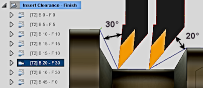

Spécifie un angle qui est ajouté à l'angle d'outil pour fournir un dégagement devant l'arête de coupe.
 |
Affiché avec un dégagement avant de 30 degrés et un dégagement arrière de 20 degrés |
Définit le détalonnage entre la pièce et l'arête avant de l'outil de coupe. Permet de moins faire glisser l'insert sur l'arête avant des outils.